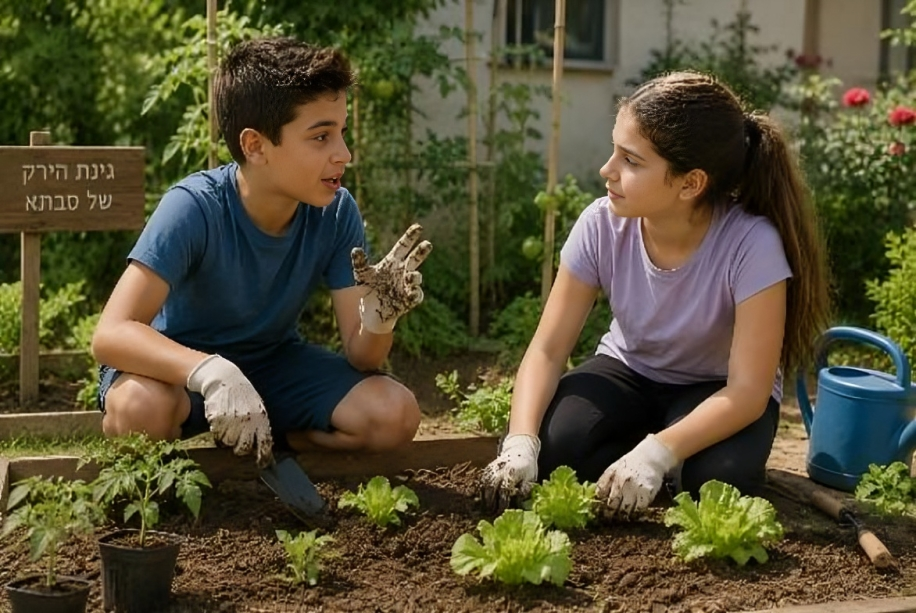
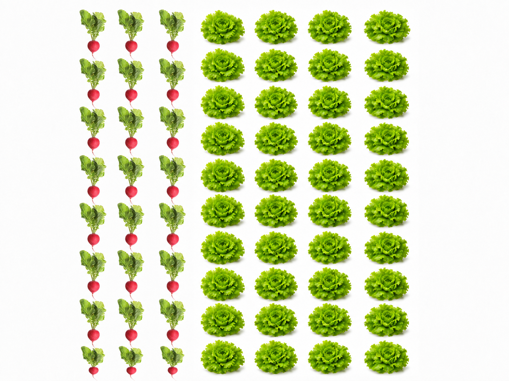
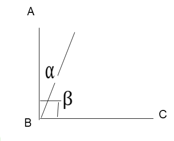

איזו דמות תרצו שתלווה אתכם?
בחרו דמות
אולימפיאדת המדעים
שתי משלחות יצאו לאולימפיאדת המדעים וזכו בדיוק באותה כמות של מדליות זהב:
- משלחת א': היחס הוא 1:4 (מדליית זהב 1 על כל 4 משתתפים ומשתתפות במשלחת).
- במשלחת ב': היחס הוא 1:8 (מדליית זהב 1 על כל 8 משתתפים ומשתתפות במשלחת).
א. באיזו משלחת לדעתכם יש יותר משתתפות ומשתתפים?
ב. אם במשלחת א' זכו ב-5 מדליות זהב, כמה משתתפים יש במשלחת ב'?
ג. חשיבה יחסית: איזו משלחת הציגה אחוז הצלחה גבוה יותר
(יותר מדליות ביחס לגודל המשלחת)?
כדי לענות בקלות על שאלות מהסוג הזה, עלינו:
- להעמיק בדרכים לחישוב כמויות מתוך יחס.
- להעריך ולאמוד תוצאות המתקבלות כתוצאה מחישוב כמויות באמצעות יחס נתון.
- לבסס הבנה של יחסים בעזרת חישובים מתאימים ובעזרת אומדן.
נשמע מאתגר ממש!
בא לי!

איך נשתמש ביחס לחישוב גודל החלקים בקבוצה?
יהב ויעל שתלו בגינת הירק של סבתא 70 זרעים של צנוניות וחסה ביחס של 3:4.
יהב טען:
יחס של 4 : 3 .
כלומר, על כל 3 צנוניות שישתלו בגינה, ישתלו 4 זרעי חסה.

כלומר, מתוך 7 ירקות משני הסוגים, נקבל: 3 צנוניות ו-4 ראשי חסה.
השתמשו ביישומון, הגדילו את מספר השורות בעזרת הסליידר עד למספר שורות המתאים ל-70 חסות וצנוניות יחד.
סמנו לכמה שורות הגעתם:
בסוף נכין סלט?

יעל מציעה דרך קלה יותר לחישוב:
בגלל שהיחס הוא 3:4, אז ה"שלם" שלנו הוא 7 (3+4). עוד ידוע לנו שזרעי הצנוניות מהווים 37 מכלל הזרעים.
יש לנו 70 זרעים, לכן נוכל לחשב לפי החלק שמצאנו:
37 · 70 = 30 זרעי צנוניות
47 · 70 = 40 זרעי חסה
טווווב את גאונה!
ניתן לראות שהדרך של יעל מובילה אותנו לאותה תוצאה, וזו בעצם הנוסחה בה נשתמש לחישוב הגודל של כל חלק בקבוצה.
נשלים יחד את המסקנה
כשגודל הקבוצה והיחס בין החלקים בה ידועים לנו, נוכל לחשב את הגודל של כל חלק באמצעות המשוואה שלפנינו.
מה מייצג כל מספר במשוואה? גררו כל הגדרה אל המקום המתאים.
עוד מעט נתחיל לתרגל,
רגע לפני, בואו נפתור תרגיל אחד יחד
יחס – בואו נפתור תרגיל ראשון יחד
קראו את התרגיל הבא. אל תפתרו אותו, רק הסתכלו על הנתונים וחישבו האם יש לכם כיוון לפתרון.
לאורי ודן יש 56 גולות. היחס בין כמות הגולות האדומות לבין כמות הגולות הכחולות הוא 2:5. אורי קיבל את הגולות האדומות ודן קיבל את הגולות הכחולות.
מיד נסביר את הפתרון, שלב אחר שלב
היחס בין כמות הגולות האדומות לכמות הגולות הכחולות הוא 2:5. לכן ה"שלם" שלנו הוא 2 + 5 = 7.
א. האם נכון שיש לאורי 27 מהגולות?
אורי קיבל את הגולות האדומות, כלומר יש לו 27 מהגולות.
דן קיבל את הגולות הכחולות. אם היחס הוא 2:5, ואורי קיבל 27,
ב. איזה חלק קיבל דן?
דן קיבל 57 מהגולות.
דן קיבל 57 מהגולות.
אם לאורי יש 27 מהגולות, ויש סה"כ 56 גולות, נוכל לחשב:
ג. 27⋅56 = ?
אורי קיבל 16 גולות.
אורי קיבל 16 גולות.
אם לדן יש 57 מהגולות, ויש סה"כ 56 גולות, אז נוכל לחשב:
ד. 57⋅56 = ?
דן קיבל 40 גולות.
ד. דרך נוספת:
סך כל הגולות הוא 56.
אורי קיבל 16 גולות.
לכן, דן קיבל:
56 − 16 = גולות 40
דן קיבל 40 גולות.
נוכל גם לסדר את הגולות בקבוצות של 7.
בכל קבוצה יהיו 2 גולות אדומות ו-5 גולות כחולות.
מכיוון ש- 8 = 7 ÷ 56,
נוצרו 8 קבוצות (בתמונה כל קבוצה מסודרת בשורה).
לכן, יהיו 8 · שורות 2 = 16 גולות אדומות,
ו- 8 · שורות 5 = 40 גולות כחולות.
מה נשאר לנו בראש?
2 שאלות קלילות לחימום לפני שנתקדם
במכולת של שלומי יש 60 בקבוקי שתייה מוגזים, חלקם בטעם תות וחלקם בטעם מנגו. היחס בין מספר בקבוקי השתייה בטעם תות למספר בקבוקי השתייה בטעם מנגו הוא 2:3.
השתמשו ביישומון ועזרו לשלומי לסדר את הבקבוקים על המדפים, לפי היחס שצוין.
בסרטוט נתונה זווית ∢ABC = 90°.
היחס בין גודלה של זווית α לבין גודלה של זווית β הוא 1:4.
השלימו:

רמז
לפי היחס 1:4, לכמה חלקים יש לחלק את גודל הזווית השלמה (∢ABC) על מנת לקבל את זווית β?